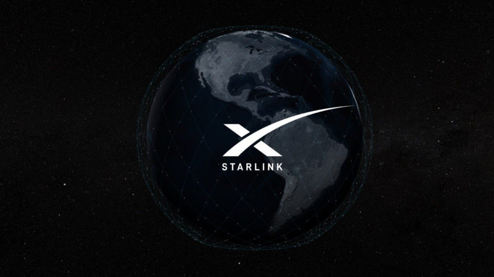
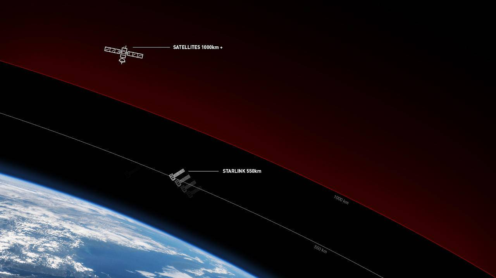
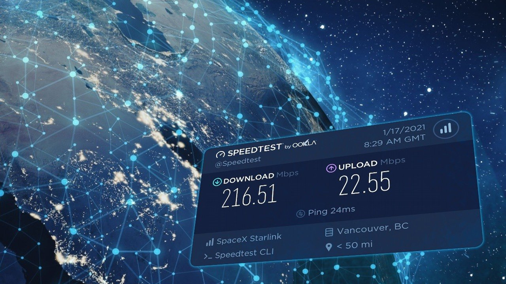
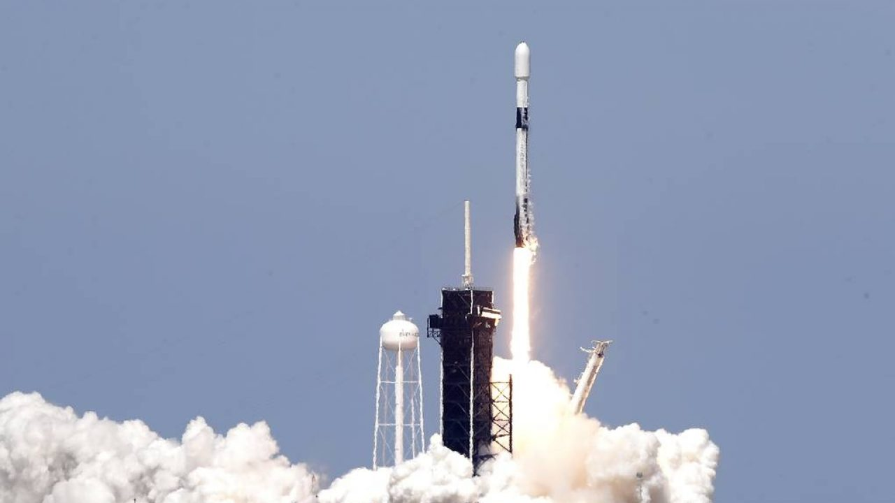

Amerikan uydu şirketi SpaceX tarafından uydu interneti erişimi sağlamak üzere inşa edilmiş bir uydu takımyıldızıdır. Takımyıldızı, yer istasyonları ile birlikte çalışacak ve seri olarak üretilen binlerce küçük uydudan oluşacak. Geçtiğimiz Ekim ayında beta denemelerine başlayan şirket, Starlink internet projesi kapsamında 12 bin internet uydusu uzaya fırlatmayı hedefliyor.
SpaceX, düzenli aralıklarla uzaya Falcon 9 roketleri gönderiyor. Starlink projesindeki amaç, uzaya gönderilen her bir roket ile beraber 60 adet Starlink uydusunu yörüngeye taşımak. Bir yanesi yaklaşık 230 kilo ağırlığında olan uydular, dünya yörüngesinden yaklaşık 440 kilometre yüksekliğe yerleştiriliyor. Söz konusu yörünge, diğer uyduların yerleştirildiği mesafelere kıyasla göre Dünyamıza son derece yakın.
Kapasitenin sınırlı olduğu belirtilen Starlink projesi için 99 dolarlık bir depozito ödemeniz gerekiyor. Ayrıca internet hizmetini kullanmanız için 499 dolar değerindeki Starlink başlangıç kitini de satın almanız gerekiyor. CEO Elon Musk daha önce yaptığı açıklamada, projenin düşük maliyetli küresel geniş bant internet yetenekleri için önemli bir talebi karşılayacağını ifade etmişti.
Eğer internet hizmetinden faydalanmaya karar verdiyseniz, yapmanız gereken ilk şey Starlink’in internet sitesine giriş yapmak olacak. Daha sonra sizden mail adresinizi girerek, konumunuzu seçmenizi isteyecek. İstenen bilgileri doldurduktan sonra ‘order now’ seçeneğine tıkladıktan sonra projenin hizmet vereceği tarih size verilecek. Bu aşamada ödediğiniz 99 dolarlık depozito ücreti eğer hizmet alamamanız durumunda size geri iade edilmeyecek.
Elon Musk’ın oldukça ilgi gören projesi, tüm prosedürlerin tamamlanması durumunda 2027 yılında tamamlanacak. Bu süreç içerisinde Starlink internet projesinin küresel olarak verilmesi için uzayda internet uydu ağı kurulacak. Ancak 2027 yılında tamamlanacak olması internet hizmetinin daha erken hayata geçmeyeceği anlamına gelmiyor. Starlink internet hizmetinin 2021 yılının sonlarında doğru Türkiye‘ye gelmesini bekliyoruz.
